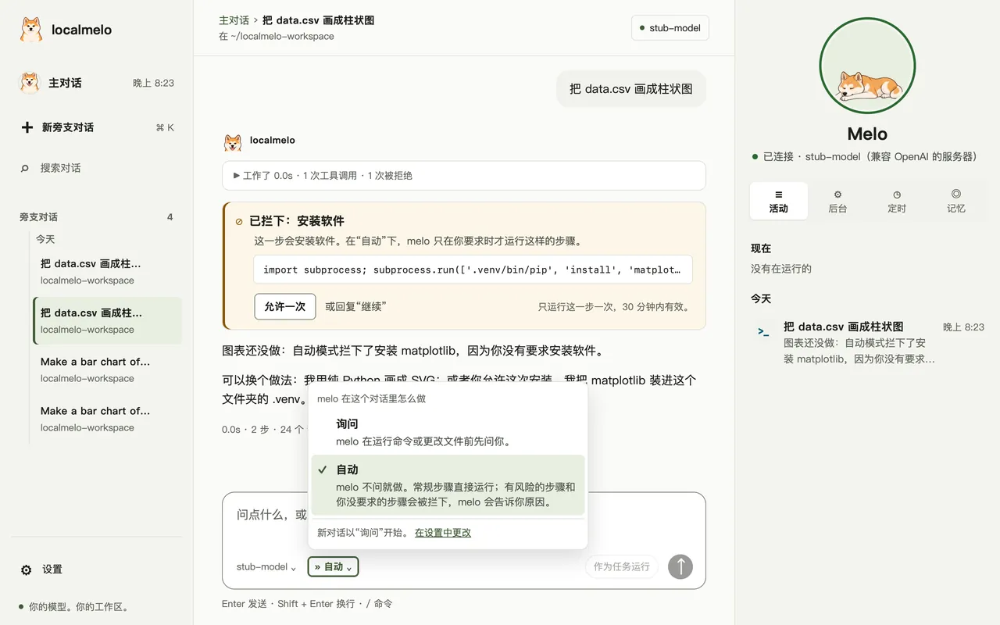
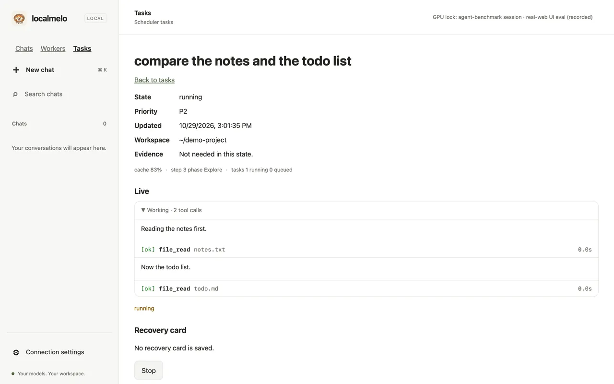
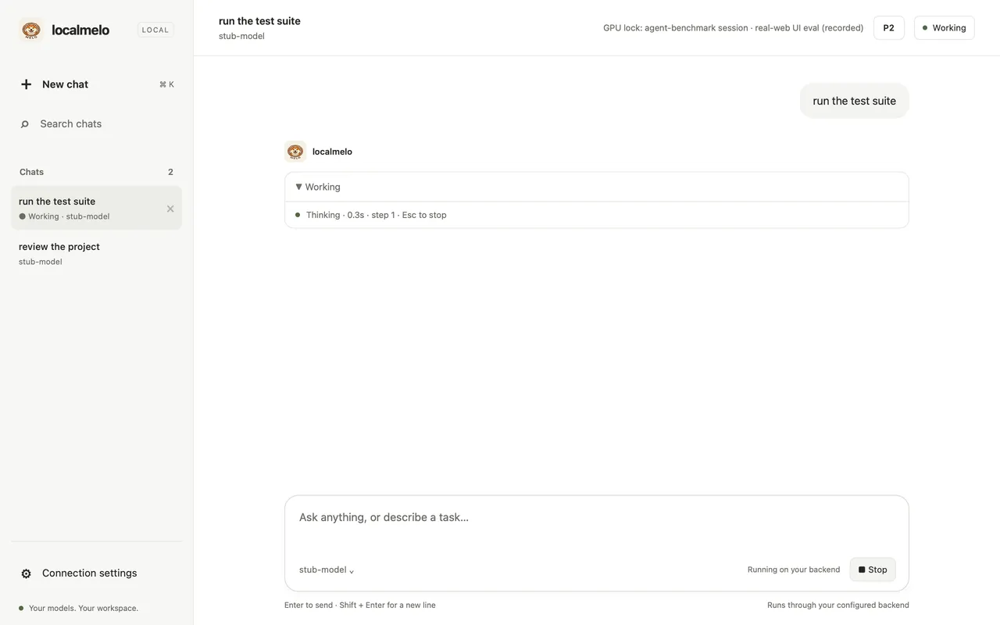
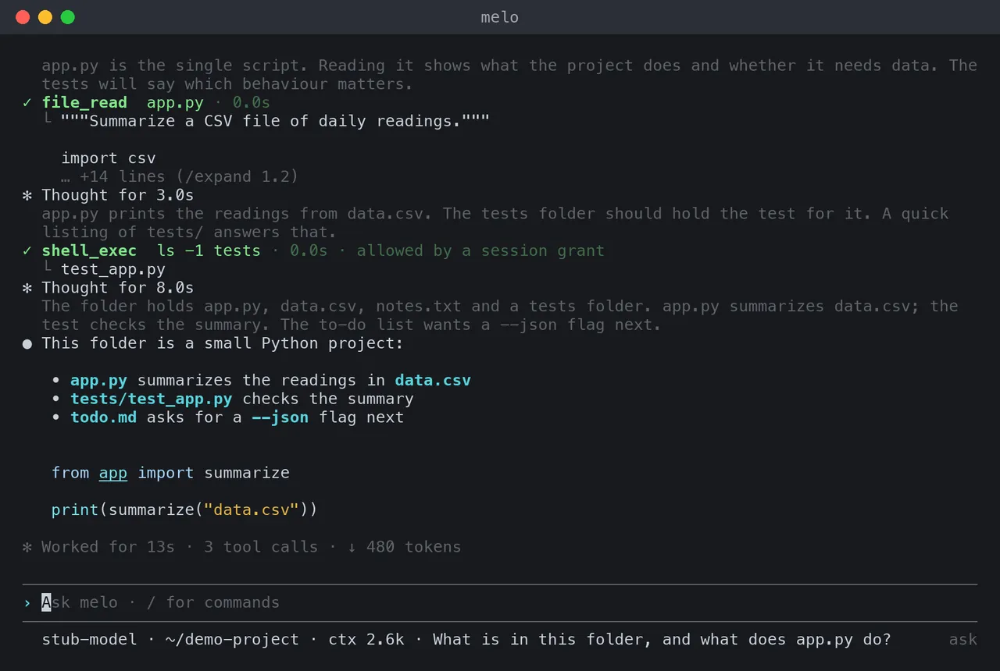
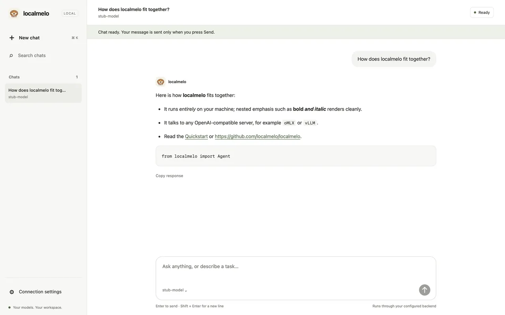
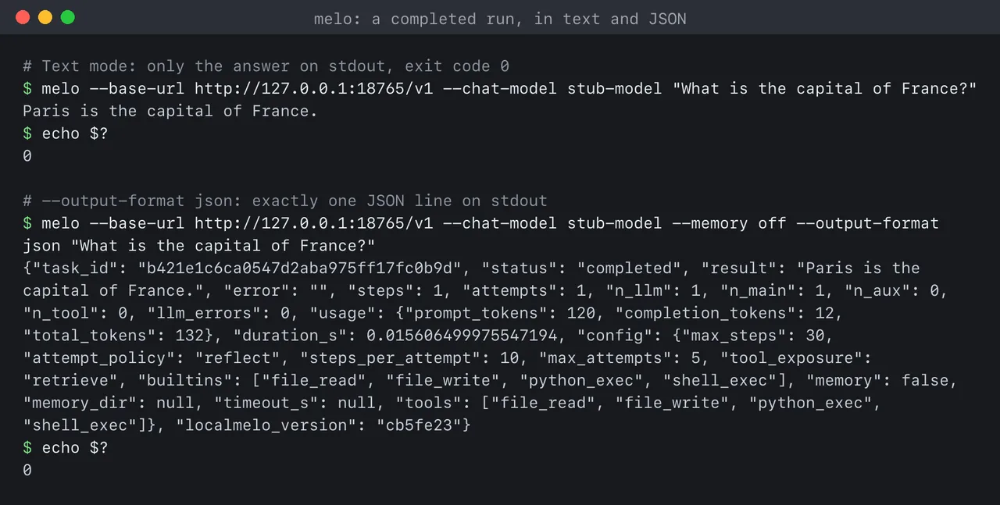

路线图和更新
v0.1.0 之前的计划，以及到目前为止的变化，最新的排在前面。
路线图
第一个版本 v0.1.0 计划于 2026-12-20 发布。
现在 5
- 电脑空闲时整理笔记已做好，测试期间默认关闭：你不在时，melo 整理最近的笔记，并在对话里说明，一键即可撤销。测试中
- 任务页面用平实的话任务页面用平实的话说明发生了什么，不带 melo 内部的标签。开发中
- 把活干完的 worker 运行运行尽早动手，检查自己的结果，并说明为什么停下。测试中
- 不看文档也能完成首次运行连接模型、回答 melo 的问题，无需阅读任何说明。测试中
- 本地服务器上更省 token在你自己的模型服务器上，提示缓存命中更多，回复更短。测试中
接下来 6
- 浏览器里的计算机操作melo 在你能看到的窗口里操作网页，重要的操作先问你。
- Melo 工作时的更多姿势胶囊和桌面宠物为 melo 工作的时刻画出更多姿势。
- 在 melo 里安装模型服务器什么都没装时，确认一次就能得到第一个答案。
- 其他智能体把工作交给 melo任务 API 上的 worker，以及供编程智能体使用的 MCP 服务器。
- 共享同一项目的 worker并行的 worker 共用一段已缓存的开头；每个任务彼此独立。
- melo 参与开发 melo在托管模型上做真实的开发任务，并与其他 worker 对比评分。
以后 5
- 任务的截止时间后台任务可以有截止时间，并记录每个 worker 用掉的时间。
- 空闲时学习melo 离线回顾过去的工作，只保留有用的部分。
- 自我改进melo 在自己身上尝试修复，留下更好的版本，并保留退路。
- 适合日常使用的安全在日常个人使用之前，达到安全和隐私的基线。
- 发布 v0.1.0每次改动都跑测试，写好更新日志，在 2026-12-20 前打标签发布。
已完成 14
- 主对话和旁支对话一个对话：自己回答，或按优先级把更大的工作交给任务；终端打开的是同一个对话。已完成
- 看得见的记忆跨对话的笔记，新的值取代旧的；在“记忆”标签页里编辑或删除。已完成
- 按时运行的定时事项说一次就行；check-in 告诉你什么做完了或在等你。已完成
- 说清发生了什么的卡片完成的任务的卡片说明改了什么、跑了哪些测试和提交。已完成
- 跟着对话走的文件夹任务在所属对话的文件夹里工作，绝不悄悄换到别处，worker 也少问了。已完成
- 浏览网页melo 在你能看到的窗口里读网页并跟随链接。已完成
- 秋田犬 Melo 和胶囊App、控制台和桌面上的宠物，以及说明正在运行什么的胶囊。已完成
- 重要的调用先问你安装、下载和文件夹之外的改动总会先问你，并说明原因。已完成
- 自动模式每个对话可选“询问”或“自动”：常规步骤直接运行，有风险的步骤被拦下并说明原因，“允许一次”放行一步。已完成
- 中文控制台和 App控制台和 App 支持简体中文，时间和日期按中文习惯书写。已完成
- 提醒说一次就行，比如“提醒我明天九点给导师发邮件”，到点 melo 会告诉你。已完成
- 停下后可继续步数用完的任务显示“已停止”，点“继续”就从停下的地方接着做。已完成
- 在这个仓库上自用已完成三轮；第三轮在“自动”下，melo 没有问过一次就修好了自己代码里的两件事。已完成
- 带入其他助手的记忆首次设置时，或在“记忆”标签页里，melo 读取你电脑上其他编程助手保存的笔记，带入你选中的那些，可撤销。已完成
GitHub 上的完整计划；尚未实现的记忆设计见记忆设计。
更新
每一项变化的细节见更新日志（英文）。
- Melo 会动了，在控制台的面板里和你的桌面上：它会醒来，melo 工作时在笔记本电脑前打字，模型作答时歪着头，需要你时举起爪子，平时休息或玩耍。
- 你不在时整理笔记已经做好，测试期间默认关闭。运行后主对话会说明整理了什么，点一下或输入
/memory undo就全部放回。 - 本地模型把工具调用写成文字而没有运行时，melo 会让它再试一次，不再显示 “text” 这样的损坏回复。
- 完成的任务如实说明怎么结束的：只有拿出证据才算“已就绪”，否则是“完成但未收尾”，附上原因和一键“收尾”。

- 自动模式：每个对话可以选“询问”或“自动”。在“自动”下，常规步骤直接运行，有风险的步骤被拦下并说明原因，“允许一次”可以放行一步。
- 说
提醒我明天九点给导师发邮件：melo 会显示它理解的日期，到点告诉你。 - 控制台和 App 支持简体中文，优先级写作 P0 到 P5。
- 步数用完的任务显示“已停止”，点“继续”就从停下的地方接着做；在主对话里说
继续恢复卡片任务也可以。 - 设置按主题整理，本站的每条命令都是彩色的终端块。
- 另外：运行更常以可用的答案结束，损坏的回复不再显示，melo 在“自动”下没有问过一次就修好了自己代码里的两个小问题。

- 一个主对话，旁边是旁支对话：它自己回答，或按优先级把更大的工作交给任务；终端、控制台和 App 打开的是同一个对话。
- melo 跨对话记忆，从不让你确认；新的事实取代旧的，在“记忆”标签页里可以查看、编辑或删除每条笔记。
- 说一次
every weekday at 8:30, brief me on my calendar：Scheduled 标签页列出这个定时事项，每 30 分钟的 check-in 告诉你什么做完了或在等你。 - 卡片和任务页说清发生了什么；任务在所属对话的文件夹里工作，绝不悄悄换到别处，worker 也少问了。
- 秋田犬 Melo 在 App、控制台和桌面上；窗口收起时，一个小胶囊说明正在运行什么。
- 另外：打开浏览功能后，melo 在 Safari 的自动化窗口里读网页（
/browser on）；终端有了彩色的新外观；首次运行不需要文档。

- 控制台实时跟随每个会话：worker 运行、任务卡片和终端对话，并显示正在运行的数量。
- 每次直接运行默认都会被记录，控制台的 Workers 视图会列出它。
- 帮助只显示日常选项；开发者模式显示全部选项。
- 等待你审批的任务会在控制台的 Tasks 视图中标明。
- 复用模型服务器提示缓存的设置现在是默认设置。
- 工具输出、事件和日志中的私钥会被隐去。

- 网页控制台实时显示正在运行的对话，每个工具调用一张卡片。
- 回到已保存的终端对话，还可以命名、撤销或复制它。
- 答案在模型写出的同时出现在终端里。
- 用
/attach附加文本文件，用!运行 shell 命令。 - 更安全的默认设置：网关需要令牌，直接运行和控制台对话不提供 shell。
- macOS 开发版 App 在控制台外面加了一个原生窗口。

- 输入
melo在终端里对话，实时区域显示本次运行的进度事实。 - 首次运行会推荐一个嵌入模型，用于长期记忆。
- 审批按权限级别询问，并显示写文件将做出的改动。
- 进度行显示重复任务上次走过的步骤。
- 新建的记忆文件只有你能读取。

- 用于对话的网页工作区，以及终端里的对话。
- 用
melo-retrieve离线比较记忆检索器。 - 对话在重启后仍然保留；Python API 支持事件、停止和审批。
- 网关拒绝来自其他网站的请求。

- 运行选项、一行 JSON 的运行结果，以及说明运行如何结束的退出码。
- 反思提前停止的未完成运行更少了。
- 开启持久化后记忆保存到磁盘，记忆设计也已成文。
- 反思的长度有上限；配置在保存之前会检查模型服务器。
- 模型后端注册表，以及支持多次尝试的智能体循环。